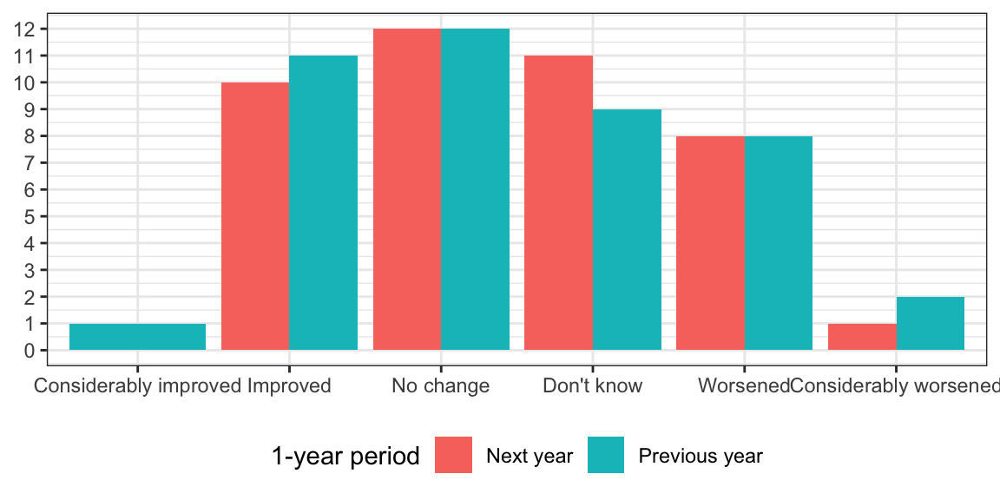
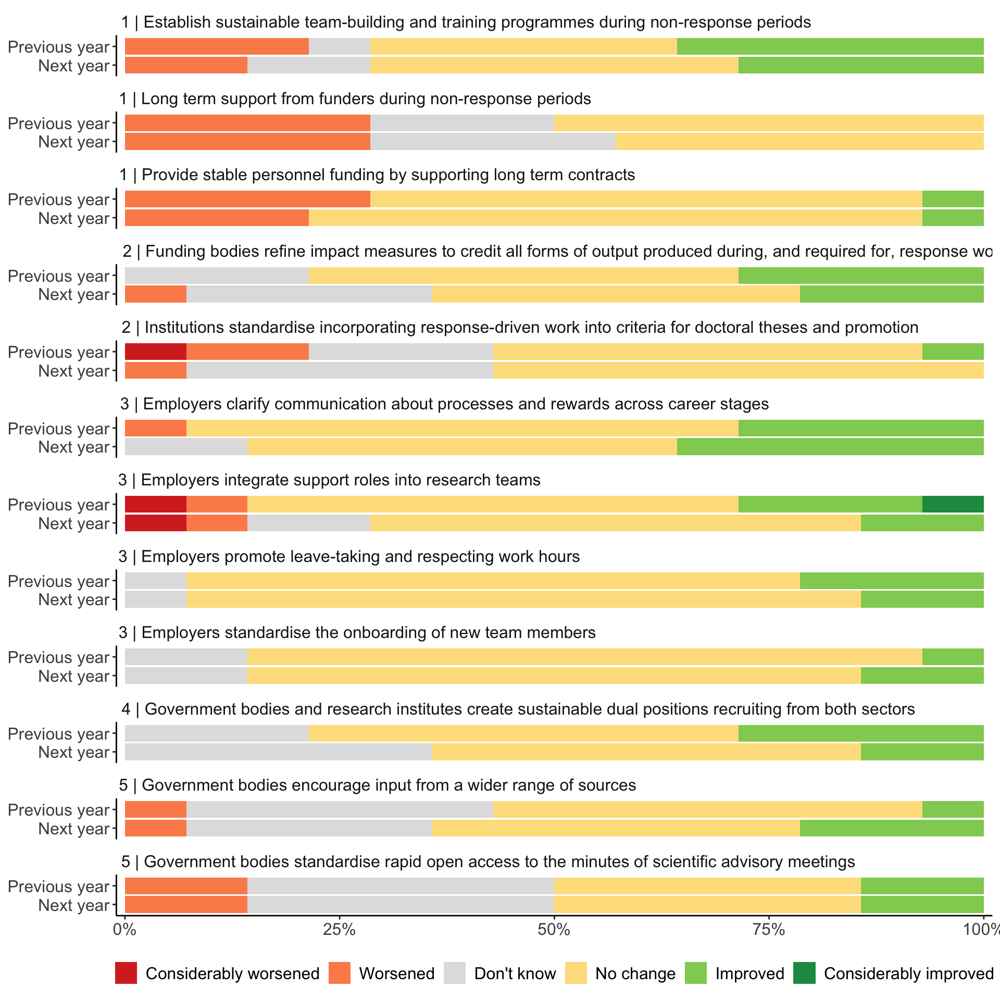

Appendix: Responses to improving conditions for outbreak modelling
Multichoice questions
Responses across all items
Responses by item

| theme_no | theme | recommendation | time | Considerably improved | Improved | No change | Don't know | Worsened | Considerably worsened |
|---|---|---|---|---|---|---|---|---|---|
| 1 | Ensure response teams are well-staffed, well-resourced, stable, and provided psychological support | Establish sustainable team-building and training programmes during non-response periods | Next year | 0 | 4 | 6 | 2 | 2 | 0 |
| 1 | Ensure response teams are well-staffed, well-resourced, stable, and provided psychological support | Establish sustainable team-building and training programmes during non-response periods | Previous year | 0 | 5 | 5 | 1 | 3 | 0 |
| 1 | Ensure response teams are well-staffed, well-resourced, stable, and provided psychological support | Long term support from funders during non-response periods | Next year | 0 | 0 | 6 | 4 | 4 | 0 |
| 1 | Ensure response teams are well-staffed, well-resourced, stable, and provided psychological support | Long term support from funders during non-response periods | Previous year | 0 | 0 | 7 | 3 | 4 | 0 |
| 1 | Ensure response teams are well-staffed, well-resourced, stable, and provided psychological support | Provide stable personnel funding by supporting long term contracts | Next year | 0 | 1 | 10 | 0 | 3 | 0 |
| 1 | Ensure response teams are well-staffed, well-resourced, stable, and provided psychological support | Provide stable personnel funding by supporting long term contracts | Previous year | 0 | 1 | 9 | 0 | 4 | 0 |
| 2 | Acknowledge, and reward, impactful response work at institution, funder, and research community levels | Funding bodies refine impact measures to credit all forms of output produced during, and required for, response work | Next year | 0 | 3 | 6 | 4 | 1 | 0 |
| 2 | Acknowledge, and reward, impactful response work at institution, funder, and research community levels | Funding bodies refine impact measures to credit all forms of output produced during, and required for, response work | Previous year | 0 | 4 | 7 | 3 | 0 | 0 |
| 2 | Acknowledge, and reward, impactful response work at institution, funder, and research community levels | Institutions standardise incorporating response-driven work into criteria for doctoral theses and promotion | Next year | 0 | 0 | 8 | 5 | 1 | 0 |
| 2 | Acknowledge, and reward, impactful response work at institution, funder, and research community levels | Institutions standardise incorporating response-driven work into criteria for doctoral theses and promotion | Previous year | 0 | 1 | 7 | 3 | 2 | 1 |
| 3 | Implementing best practices for a sustainable work environment | Employers promote leave-taking and respecting work hours | Next year | 0 | 2 | 11 | 1 | 0 | 0 |
| 3 | Implementing best practices for a sustainable work environment | Employers promote leave-taking and respecting work hours | Previous year | 0 | 3 | 10 | 1 | 0 | 0 |
| 3 | Implementing best practices for a sustainable work environment | Employers clarify communication about processes and rewards across career stages | Next year | 0 | 5 | 7 | 2 | 0 | 0 |
| 3 | Implementing best practices for a sustainable work environment | Employers clarify communication about processes and rewards across career stages | Previous year | 0 | 4 | 9 | 0 | 1 | 0 |
| 3 | Implementing best practices for a sustainable work environment | Employers integrate support roles into research teams | Next year | 0 | 2 | 8 | 2 | 1 | 1 |
| 3 | Implementing best practices for a sustainable work environment | Employers integrate support roles into research teams | Previous year | 1 | 3 | 8 | 0 | 1 | 1 |
| 3 | Implementing best practices for a sustainable work environment | Employers standardise the onboarding of new team members | Next year | 0 | 2 | 10 | 2 | 0 | 0 |
| 3 | Implementing best practices for a sustainable work environment | Employers standardise the onboarding of new team members | Previous year | 0 | 1 | 11 | 2 | 0 | 0 |
| 4 | Encourage routine interaction between academia and public health agencies, including consistently reviewing the role of each during epidemic responses | Government bodies and research institutes create sustainable dual positions recruiting from both sectors | Next year | 0 | 2 | 7 | 5 | 0 | 0 |
| 4 | Encourage routine interaction between academia and public health agencies, including consistently reviewing the role of each during epidemic responses | Government bodies and research institutes create sustainable dual positions recruiting from both sectors | Previous year | 0 | 4 | 7 | 3 | 0 | 0 |
| 5 | Increase the transparency of the evidence pathway | Government bodies standardise rapid open access to the minutes of scientific advisory meetings | Next year | 0 | 2 | 5 | 5 | 2 | 0 |
| 5 | Increase the transparency of the evidence pathway | Government bodies standardise rapid open access to the minutes of scientific advisory meetings | Previous year | 0 | 2 | 5 | 5 | 2 | 0 |
| 5 | Increase the transparency of the evidence pathway | Government bodies encourage input from a wider range of sources | Next year | 0 | 3 | 6 | 4 | 1 | 0 |
| 5 | Increase the transparency of the evidence pathway | Government bodies encourage input from a wider range of sources | Previous year | 0 | 1 | 7 | 5 | 1 | 0 |
Comments by theme